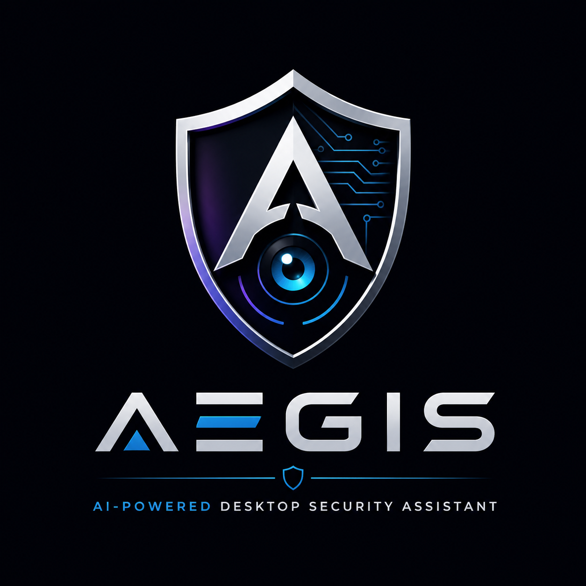

Aegis is an AI-powered desktop security assistant for Windows, macOS, and Linux. It watches your machine in the background — new processes, USB devices, startup persistence, and your Desktop, Downloads & Documents folders — and explains what it sees in plain English.
Honest by design: Aegis is not antivirus and makes no security guarantees. It doesn't block, quarantine, or remove anything. It's a personal awareness tool — a second pair of eyes, not a detector.

Aegis keeps an eye on the places where change on a personal machine tends to show up first.
Every process that starts gets noticed — what launched, and what launched it.
Anything plugged in or removed is logged the moment it happens.
New login items and autostart entries — the classic way software outstays its welcome.
Desktop, Downloads, and Documents — the folders where new files actually arrive.
Every event follows the same path — and the severity score never depends on a network call.
A process starts, a USB device appears, a login item registers, a file lands in a watched folder.
A local rule engine assigns low / medium / high / critical — on your machine, before any AI is involved.
Claude or OpenAI turns the event into plain English, and everything lands in a searchable timeline.
Security tools tend to overpromise. Aegis does the opposite — it tells you exactly what it is, and exactly what it isn't.
No signatures, no heuristics engine, no verdicts. If you need a detector, run one — alongside Aegis.
Aegis observes and explains. It never quarantines, kills, or deletes. Your machine stays yours.
No security guarantees, stated plainly. Awareness is the product — judgment stays with you.
A running, human-readable account of what changed on your machine and when.
Events become sentences you can actually act on — not hex dumps and event IDs.
Every event is logged to a searchable timeline you can browse whenever you like.
Python, a virtualenv, and optionally an API key. Aegis runs fine without one — you just lose the AI explanations, not the watching.
$ python -m venv venv && source venv/bin/activate # Windows: venv\Scripts\activate $ pip install -r requirements-macos.txt # or -windows.txt / -linux.txt $ echo "NVIDIA_API_KEY=nvapi-..." > .env # optional — runs fine without one $ python main.py
$ python ui/timeline_app.py
Alpha means the features are done and macOS is validated on real hardware. Beta means Windows is too. 2.0.0 means public release.
OpenAI-compatible endpoints + Anthropic, chosen per config.
Process, folder, USB, notifications — three real bugs found and fixed along the way.
Opt-in trusted lists, dedupe, rate limiting, configurable popup severity floor.
PyInstaller .app built and smoke-run on real hardware.
From source first, then the packaged build — in progress.
Inno Setup installer, dashboard UI, screenshots — deliberately after validation.
Full verification log, architecture, and every known gap live in ARCHITECTURE.md — the gaps are documented, not hidden.
I built Aegis because I wanted to actually understand my own machine — not trust a black box to grade it for me. Every design choice follows from that: score locally, explain plainly, log everything, promise nothing. Built with love, shipped with honesty. 🛡️